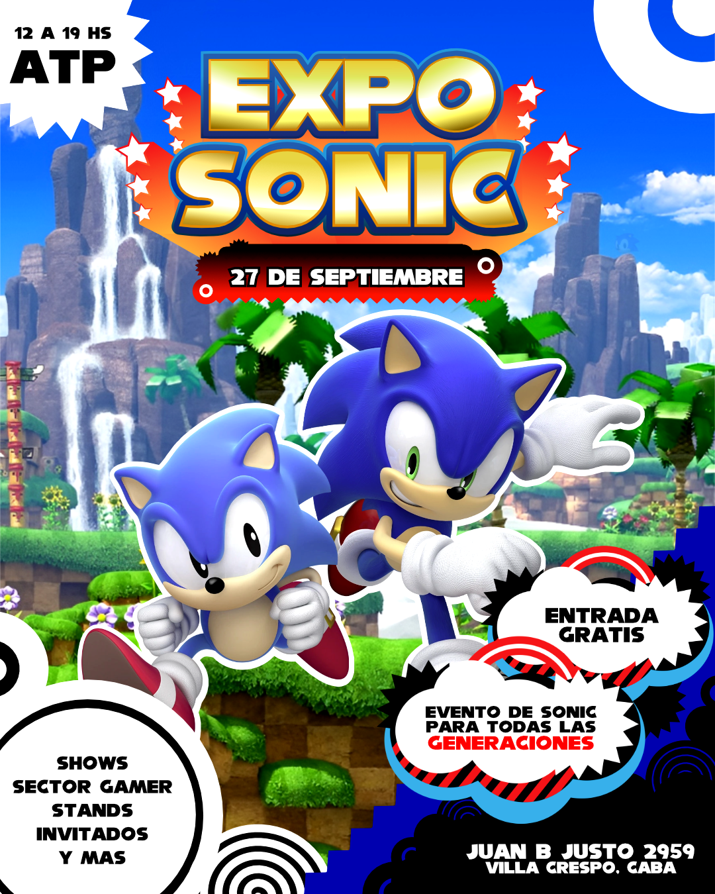
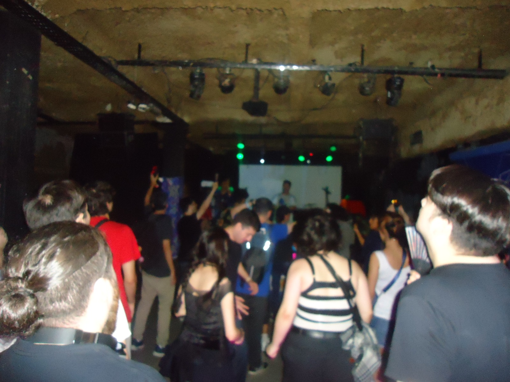

INSTAGRAM SONIC FEST
NUESTRO GRUPO VIRTUAL PARA CONOCER SONIQUER@S PARA ARMAR GRUPOS, HACER PREVIAS, SUBIR TU ARTE, CHATS, LLAMADAS Y MÁS
DISCORD SONIC FEST
INSTAGRAM SONIC FEST
NUESTRO GRUPO VIRTUAL PARA CONOCER SONIQUER@S PARA ARMAR GRUPOS, HACER PREVIAS, SUBIR TU ARTE, CHATS, LLAMADAS Y MÁS
DISCORD SONIC FEST
FIESTAS DE SONIC EN ARGENTINA +18, Y JUNTADAS Y CONVENCIONES DE SONIC PARA TODAS LAS EDADES. SOMOS EL PUNTO DE ENCUENTRO PARA FANS DE SONIC EN ARGENTINA.
PRÓXIMA: EXPO SONIC 27/09 - AGENDÁ LA FECHA! - 100% FREE CONVOCATORIA DE STANDS
CÓMO LLEGAR - GOOGLE MAPS - CLUB CULTURAL MATIENZOSEGUNDA EDICIÓN DE LA CONVENCIÓN PARA FANS DE SONIC DE TODAS LAS EDADES EN ARGENTINA ⭐
¡CON ENTRADA LIBERADA!
📅 Fecha: Domingo 27 de Septiembre de 2026
⏰ Horario: 12:00 a 19:00 hs
📍 Ubicación: Club Cultural Matienzo, Av. Juan B. Justo 2959, CABA (Villa Crespo) - Cerca de la línea B del Subte.
¡VAS A ENCONTRAR!
🎮 FREEPLAY:
• Sonic Unleashed en Xbox Series X
• Sonic x Shadow Generations en PS5
🏆 TORNEO CON PREMIO:
• Sonic Racing Crossworlds en Nintendo Switch 2
🎟️ SORTEOS CON PREMIOS:
¡Recibí tu número para el sorteo con cada compra de $8.000 gastados en los stands!

🎟️FOTOS DE LA SONIC FEST 23/11/2025 EN EL UNICLUB - RIDERS PARTY🎟️ INSTAGRAM SONIC FEST
NUESTRO GRUPO VIRTUAL PARA CONOCER SONIQUER@S PARA ARMAR GRUPOS, HACER PREVIAS, SUBIR TU ARTE, CHATS, LLAMADAS Y MÁS
DISCORD SONIC FEST
INSTAGRAM SONIC FEST
NUESTRO GRUPO VIRTUAL PARA CONOCER SONIQUER@S PARA ARMAR GRUPOS, HACER PREVIAS, SUBIR TU ARTE, CHATS, LLAMADAS Y MÁS
DISCORD SONIC FEST
👉 ¿QUÉ ES LA SONIC FEST?
👉 ¿QUIÉNES SON LOS BADNIKS?
👉 ¿QUÉ ES LA SONIC EXPO FEST?
SÍ, EN TODOS NUESTRAS FIESTAS/CONVENCIONES SIEMPRE HUBO, HAY Y HABRÁ PERSONAL DE SEGURIDAD PARA GARANTIZAR UN AMBIENTE SEGURO, PROVISTO Y SUPERVISADO POR EL ESTABLECIMIENTO DONDE SE REALIZA LA SONIC FEST. HAY CONTROL EN PUERTA Y DENTRO. SI OCURRE ALGÚN PROBLEMA O NOTÁS ALGUIEN SOSPECHOSO O QUE NO DEBERÍA ESTAR, O YA CONTAS CON UNA DENUNCIA A UNA PERSONA QUE ESTÁ PRESENTE, PRESENTALO AL PERSONAL DE SEGURIDAD, QUIENES SON LOS ÚNICOS RESPONSABLES Y AUTORIZADOS PARA INTERVENIR Y, DE SER NECESARIO, RETIRAR A LA PERSONA DEL LUGAR.
CLUB CULTURAL MATIENZO. Av. Juan B Justo 2959, CABA, Villa Crespo, CERCA SUBTE B, PALERMO, BUENOS AIRES, ARGENTINA. A 20 minutos del obelisco. Hace click en el boton de Como LLegar para ir al Google Maps.
ABRIMOS PUERTA A LAS 12 DEL MEDIODIA Y EL CIERRE DEL EVENTO ES A LAS 19HS DE LA TARDE.
ES CON ENTRADA GRATIS PARA TODAS LAS EDADES. PODES ACCEDER AL FREEPLAY EN LAS CONSOLAS, A LOS SHOWS EN VIVO, A LA TRIVIA Y CONVOCATORIA DE COSPLAYS, DIBUJO EN LA CARTULINA Y DEMAS 100% GRATIS. LO UNICO QUE SE PAGA ES LA INSCRIPCION AL TORNEO, Y LA RIFA GENERAL DEL EVENTO CON PREMIOS.
CADA $8000 GASTADOS EN UN STAND CON NÚMEROS HABILITADOS, TE GANAS UN NÚMERO QUE PODES USAR PARA EL SORTEO GENERAL DEL EVENTO / RIFA, O PARA ANOTARTE EN EL TORNEO DE SONIC RACING CROSSWORLDS CON UNA CAJA CON PREMIOS. EL NÚMERO USADO PARA EL TORNEO NO SE PUEDE USAR PARA EL SORTEO O RIFA.
SÍ, TENEMOS. PODÉS GUARDAR TU MOCHILA O TU CAMPERA. LLEVÁ EFECTIVO PARA PAGARLO.
POR SUPUESTO! LOS COSPLAYERS SON BIENVENIDOS. TAMBIÉN PODES VENIR CON TU ACCESORIO! TRAÉ TU PELUCHE, EXTREME GEAR CASERA, O UNA ESPADA EXCALIBUR IMPRESA EN 3D. NO PUEDE SER OBJETO PUNZANTE O HERRAMIENTAS PELIGROSAS. PODÉS VESTIRTE COMO QUIERAS. COPATE Y TRAE TU COSPLAY O REMERA DE SONIC! DATO: HAY CONCURSO DE COSPLAYS
SÍ!
NO SE SUSPENDE POR CONDICIONES CLIMÁTICAS. ES EN UN SALÓN, NO AL AIRE LIBRE.